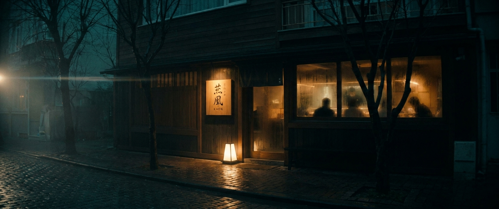
SHOT 01
00:00 → 00:04
Üç perdelik klasik intro yapısı. I. Perde — Mekan & Karakter izleyiciyi Koşuyolu'na, restoranın ruhuna ve şefin huzuruna sokar. II. Perde — Zanaat sıfırdan başlayıp bıçak, balık, pirinç, ateş üzerinden tüm üretim ritüelini izletir. III. Perde — Sunum & Deneyim imza ürünlerin sunumunda doruğa çıkar ve müşterinin ilk ısırığıyla kapanır.
Tüm sahneler 2.39:1 anamorphic çerçevede, derin siyahlar + tek sıcak tungsten ışık üzerine kurgulanmıştır. Müzik: yavaş, melankolik tek bir tema — yaylılar + ney veya kanun (Japon-Türk füzyon). Diyalog yok; sadece doğal mutfak sesleri ve müzik.

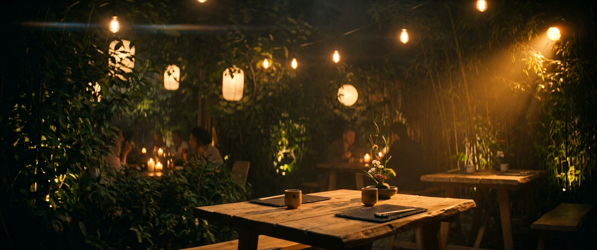
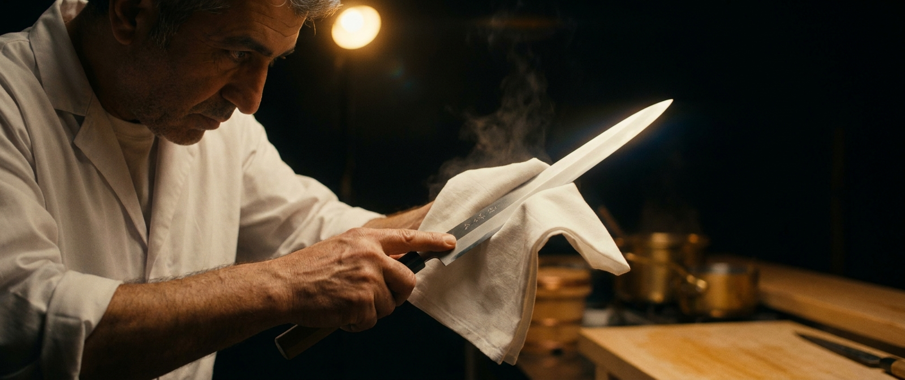
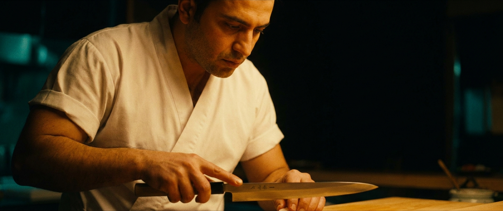
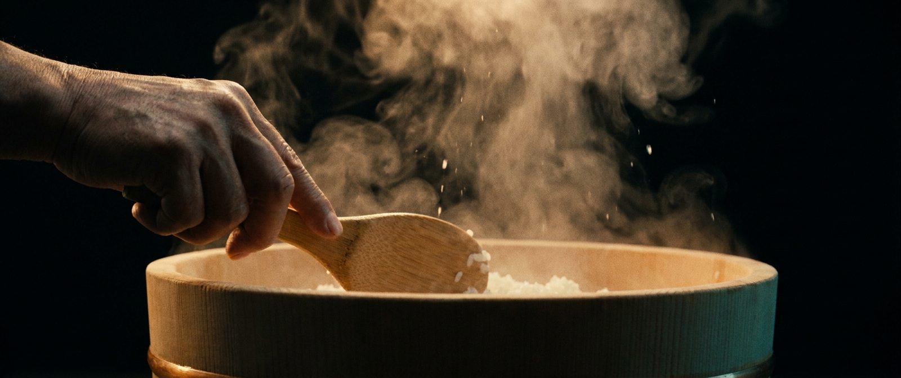
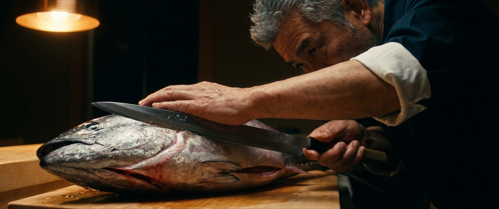
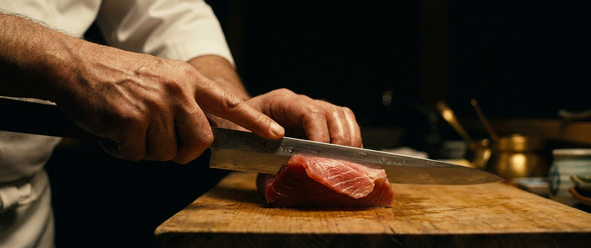
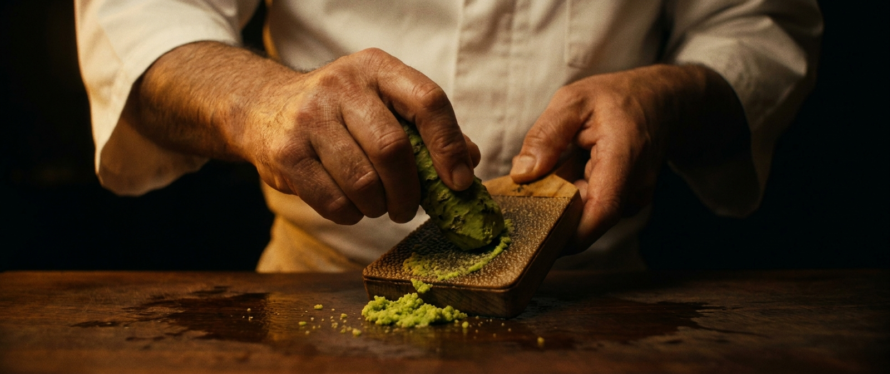
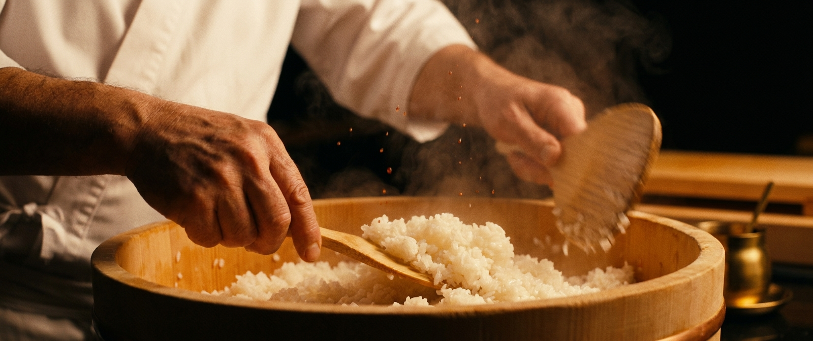
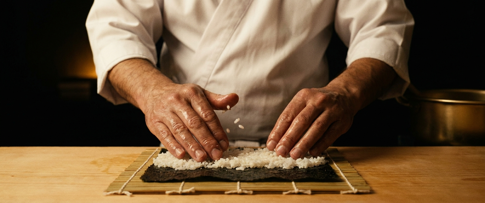
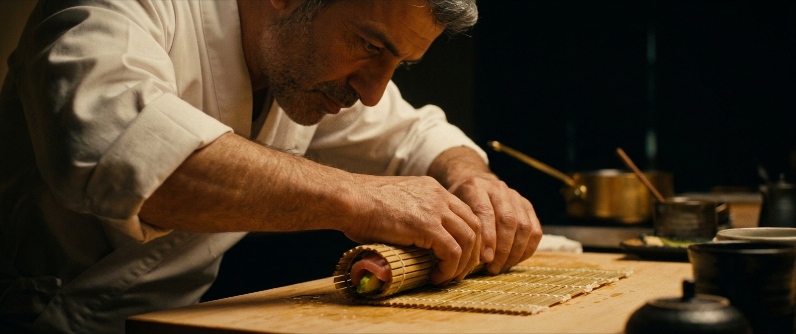
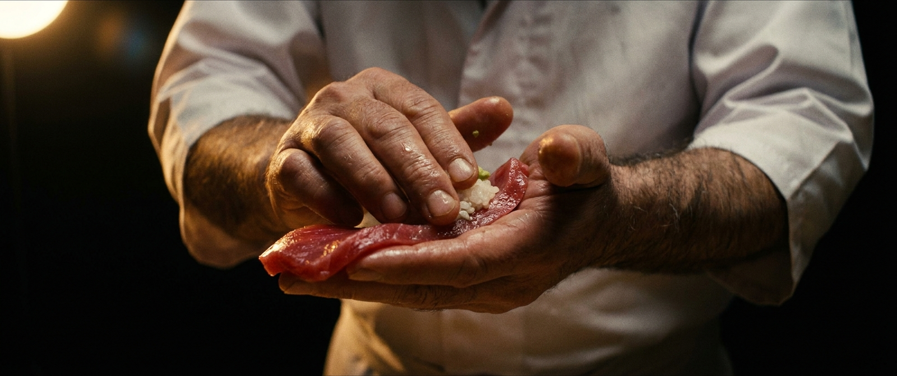
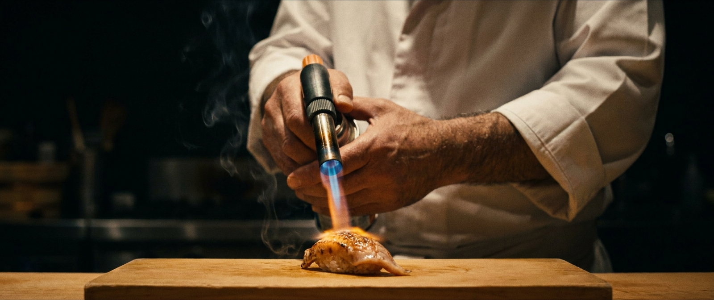
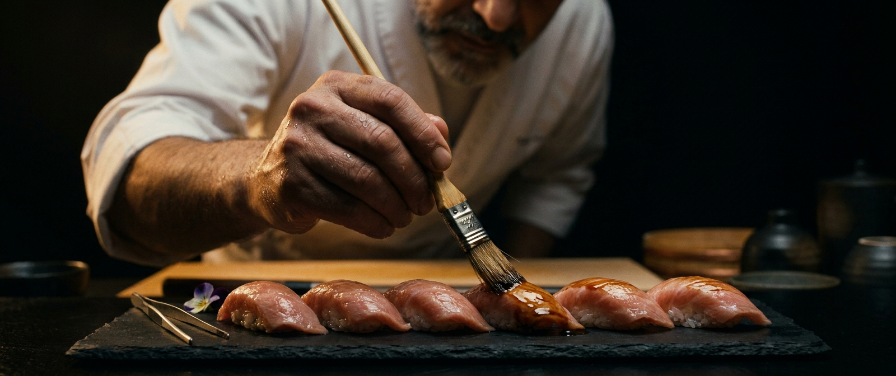
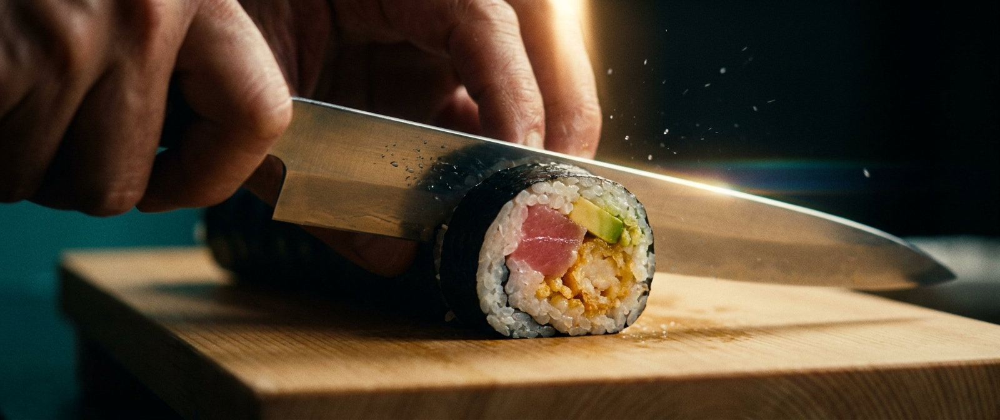
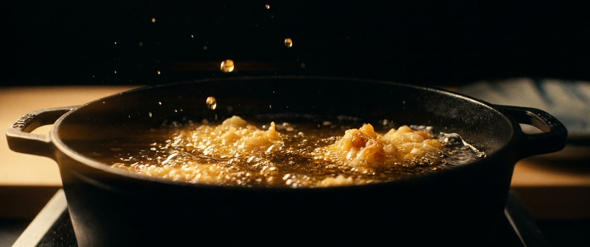
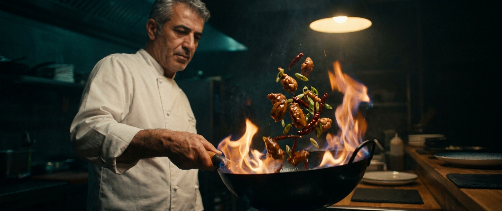
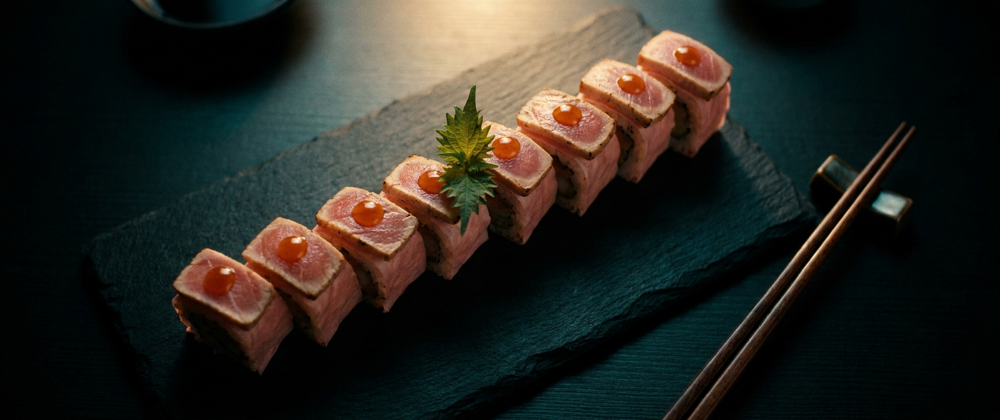
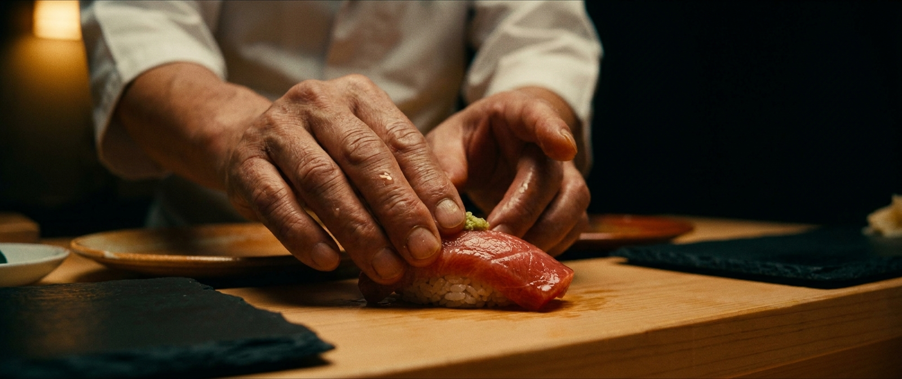
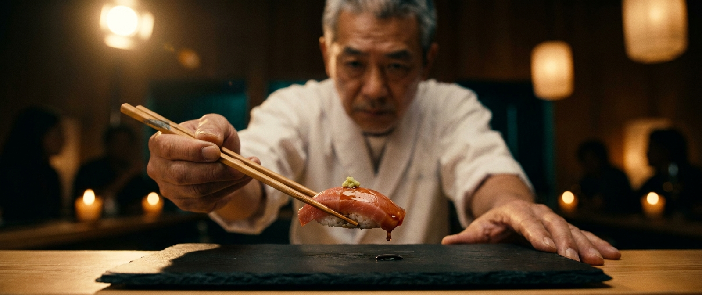